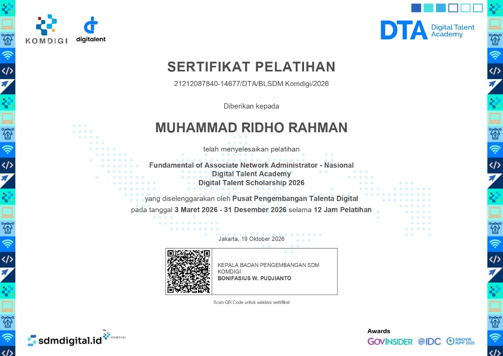
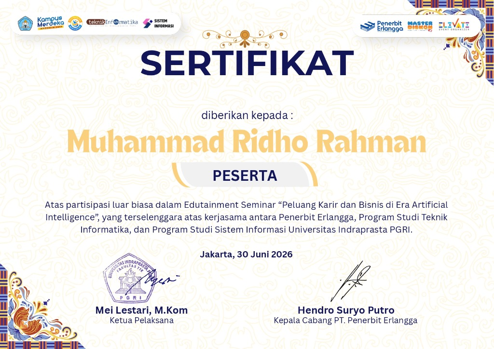

Lulusan S1 Teknik Informatika (Universitas Indraprasta PGRI) dengan latar belakang Teknik Komputer & Jaringan (TKJ). Berpengalaman di bidang Jaringan Komputer, IT Support, Pengelolaan Basis Data, dan Pengembangan Aplikasi Web & Desktop (JavaFX, Web & MySQL).

Informatika & Network Administrator
Pendidikan
S1 Informatika
IPK Kelulusan
3.48 / 4.00
Sertifikasi
Network Admin
Domisili
Bojonggede, Bogor
Saya lulusan S1 Teknik Informatika dari Universitas Indraprasta PGRI (IPK 3,48) dan memiliki latar belakang pendidikan formal Teknik Komputer dan Jaringan. Memiliki pengetahuan mendalam dalam jaringan komputer, IT Support, pengembangan perangkat lunak, dan pengelolaan basis data.
Memahami dasar konfigurasi LAN/WAN, TCP/IP, MikroTik, Debian Linux, serta pemrograman Java, HTML, CSS, JavaScript, dan MySQL. Telah menyelesaikan sertifikasi Intermediate Associate Network Administrator - Nasional melalui program Digital Talent Academy (Komdigi) untuk memperdalam keterampilan administrasi dan keamanan jaringan. Memiliki pengalaman mengembangkan aplikasi desktop dan web melalui proyek akademik serta KKP. Mampu bekerja secara individu maupun dalam tim, teliti, mudah beradaptasi, dan memiliki kemauan tinggi untuk terus belajar di bidang teknologi informasi.
S1 Teknik Informatika
Mempelajari algoritma pemrograman, rekayasa perangkat lunak, sistem basis data, arsitektur komputer, serta pengembangan tugas akhir analisis data transaksi.
Teknik Komputer dan Jaringan (TKJ)
Fokus pada perakitan komputer, instalasi OS Debian/Linux & Windows, konfigurasi jaringan LAN/WAN, routing, crimping kabel, dan troubleshooting hardware.
Pemahaman mendalam mengenai arsitektur jaringan komputer dan konektivitas.
Konfigurasi dan manajemen perangkat keras jaringan serta sistem operasi server.
Pemeliharaan infrastruktur komputer, perbaikan berkala, dan penanganan kendala pengguna.
Pengembangan aplikasi desktop dan antarmuka web interaktif.
Perancangan relasi tabel, manipulasi data, dan query database relasional.
Penyusunan laporan administrasi, pengolahan data tabular, dan presentasi.
Proyek implementasi nyata dari tugas akhir skripsi dan proyek aplikasi yang pernah saya rancang.
Aplikasi desktop untuk memproses dan menganalisis asosiasi pola pembelian pelanggan dari 200+ dataset transaksi secara akurat.
Sistem aplikasi desktop kasir & pemesanan katering Dapoer Syafira yang dibangun menggunakan Java dan antarmuka interaktif GUI.
Sistem inventaris berbasis web untuk manajemen stok barang, data pelanggan, dan pencatatan transaksi yang terintegrasi database.
ShopeeFood
Katering Dapoer Syafira
Samara Musikal
Kantor Pelayanan Pajak (KPP) Pratama Cibinong
Dokumen Kredensial & Sertifikasi Resmi

Fundamental Network Administrator
KOMDIGI | Digitalent - 12 JP

Intermediate Network Administrator
KOMDIGI | Digitalent - 12 JP

Guide to Learn SQL with AI
DQLab x UMN x Xeratic

Karir & Bisnis di Era AI
Unindra x Penerbit Erlangga
Terbuka untuk peluang kerja di bidang IT Support, Network Administrator, maupun Software/Web Development.
Telepon / WhatsApp
0895-4178-96016
Email Utama
doorahman03@gmail.com
muhammad-ridho-rahman
GitHub
github.com/ridhorhmn
Alamat Domisili
Bojonggede, Kab. Bogor, Jawa Barat